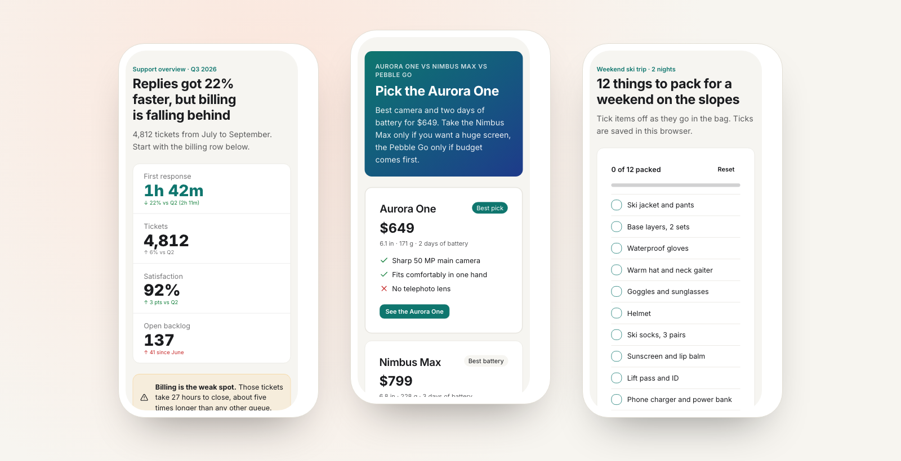

Works with small models
Fourteen recipes and a ready theme. The publish reply lists what to fix, from missing titles to broken JavaScript, and agents can check their page on a phone screen.
Open source · MIT · Free to self-host
Your AI agent makes a page. You get a link.
Charts, comparisons, checklists and calculators: one HTML page, published with one request, readable on any phone. Run your own instance in a few minutes.

Fourteen recipes and a ready theme. The publish reply lists what to fix, from missing titles to broken JavaScript, and agents can check their page on a phone screen.
Phone first, light and dark mode, built on Tailwind, daisyUI and Alpine.js.
Each page runs sandboxed on its own address. Readers can report abuse; pages expire after 30 days.
Any agent that can fetch a URL can publish. Claude Code, Copilot CLI and OpenCode get a one-line skill, and MCP clients can add the remote server.
Free plan. One click creates the database and image storage and deploys.
Any VPS or homelab. Data stays in one volume; put a reverse proxy with HTTPS in front.
git clone https://github.com/areguig/scrawl-oss
cd scrawl-oss
docker compose up -dNew resource → Public repository → this repo, build pack Docker Compose. Set the domain and deploy.
https://github.com/areguig/scrawl-ossFor a public instance, give each page its own subdomain with a wildcard domain. The README explains how, along with all settings.